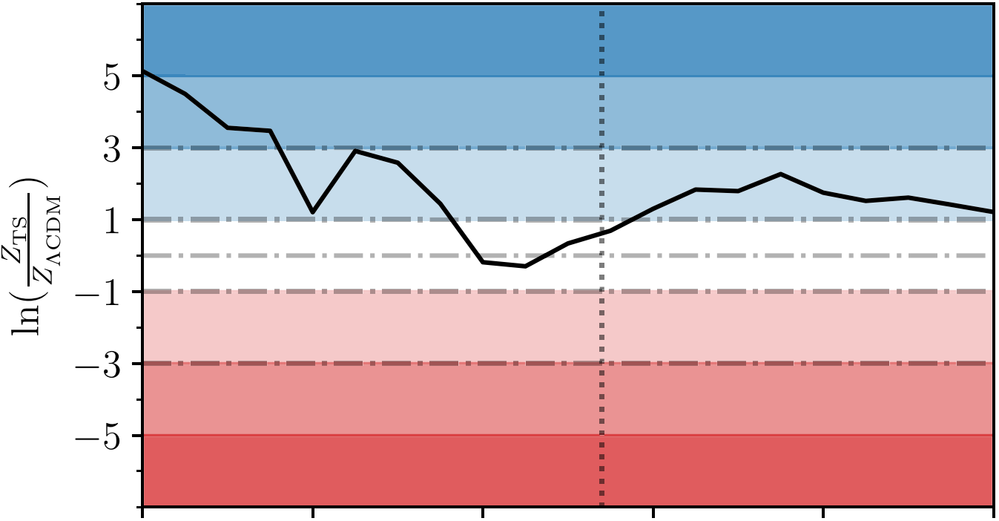
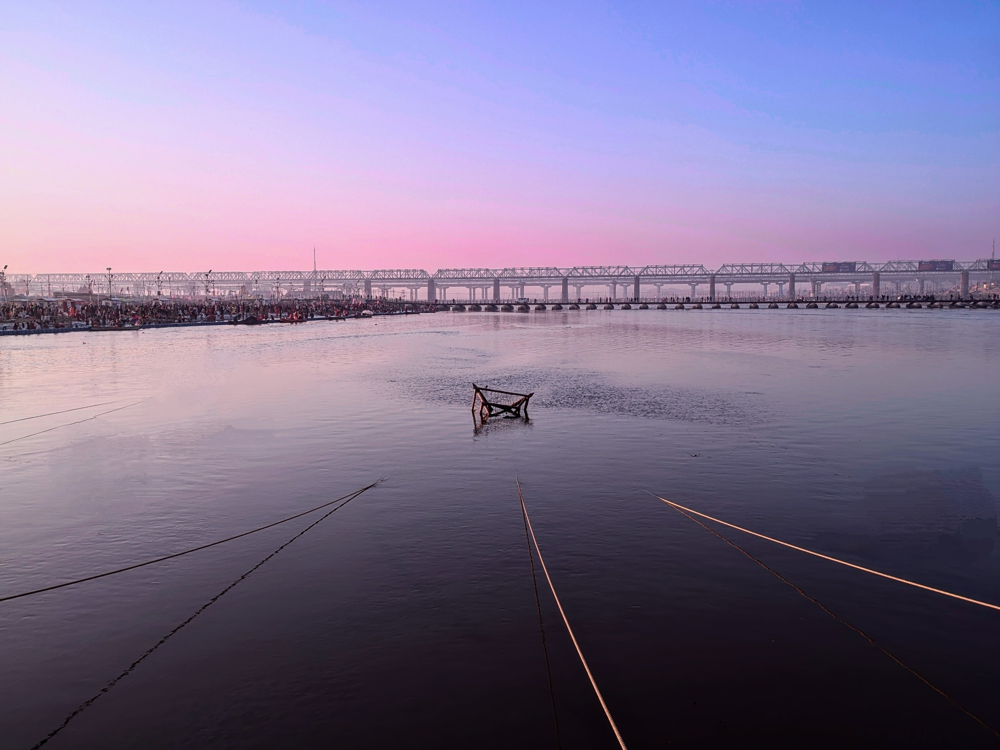
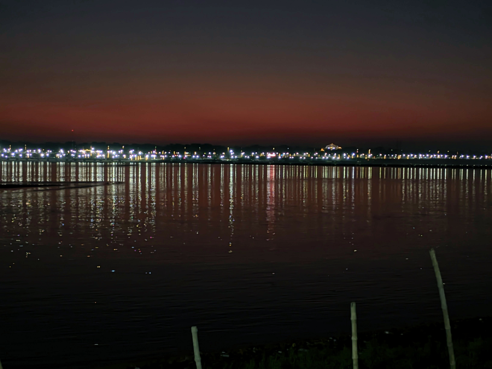
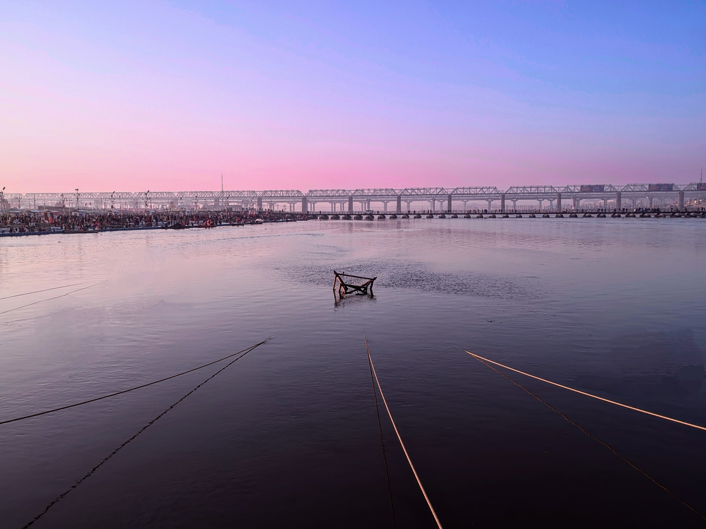
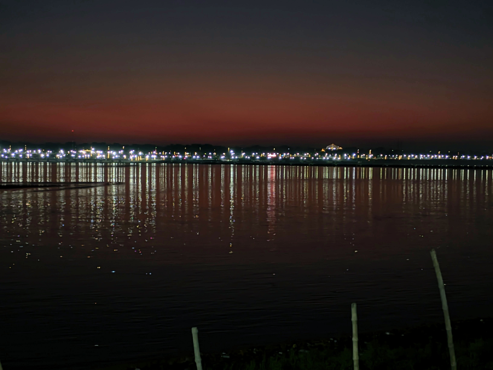
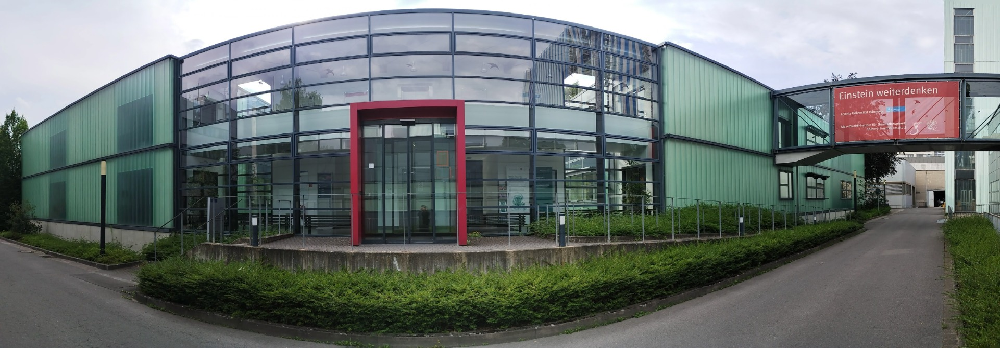
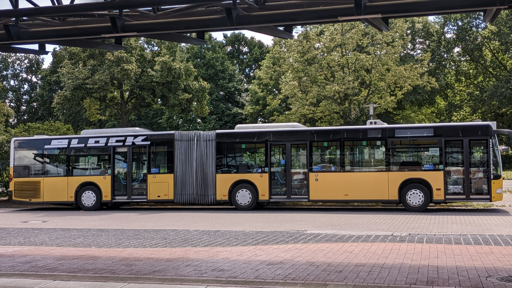
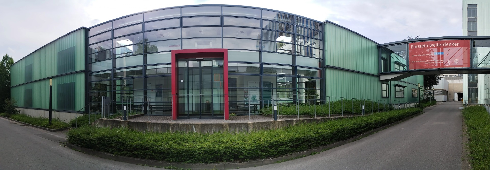
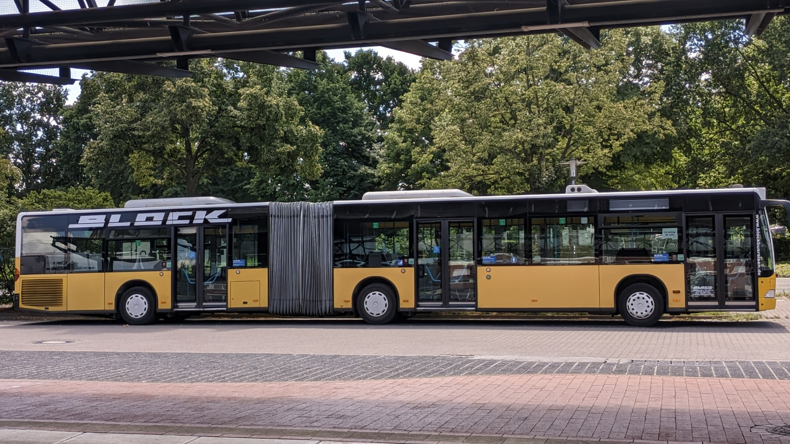

About Me
Hi there! I'm an undergraduate student at the Indian Institute of Science Education and Research (IISER) Bhopal, India, and an aspiring astrophysicist. Ever since I can remember, I've been fascinated by the wonders of the universe—black holes, pulsars, gravitational waves, and the mysterious atmospheres of distant exoplanets.
During my time at IISER, I've had the chance to dive deep into these interests through academics and internships, especially working on PTA exoplanets. It's been an incredible experience collaborating with amazing researchers and learning from them.
Astronomy has always been more than just a field of study for me—it's a lifelong passion. I'm excited to keep exploring the cosmos and contributing to uncovering its many secrets.
I use Arch BTW!
Research Interests
Publications
-
2. Ensemble noise properties of the European Pulsar Timing Array
Here is the Link to the paper: https://academic.oup.com/mnras/article/537/4/3470/7997699?login=true
-
1. Fewer supermassive binary black holes in pulsar timing array observations
Here is the Link to the paper: https://arxiv.org/pdf/2409.03627
Curriculum Vitae
Ongoing Projects
-
Resolving the hubble tension using Pulsar Timing
This project explores the possibility of measuring the Hubble constant using pulsar timing data, independent of traditional cosmological probes. By modeling the effect of cosmic expansion on pulsar time-of-arrival (TOA) measurements, I simulate the Hubble-induced delay and extract its signature from residuals using quadratic fitting. This approach offers an alternative pathway to address the Hubble tension and complements existing methods such as using Type 1A supernovae as standard candles.
-
Solar Wind Gaussian Process (SWGP) Modeling
I am currently working on the Gaussian Process modelling solar wind effects in pulsar timing arrays (PTAs). This involves analyzing the influence of solar wind plasma on pulsar timing data, separating its effects from other noise sources like dispersion measure variations and red noise. My research focuses on understanding correlations between solar wind parameters, electron column density, and their impact on pulsar timing precision.
Conference Presentations
-
InPTA bi-weekly meeting
Presented in the InPTA's bi-weekly meeting focusing on the importance of including the effects of solar wind in the pulsar timing. Mentioned the importance of integrating the effects due to solar wind plasma and electron density on the dispersion measure (dm) of signals from pulsars which lie very close to the solar disk. Showed the results from the first version of the script I built to analyse this process.
-
Gravitational-wave Analysis Telecon
I gave a presentation in the GWA's bi-weekly Telecon. The presentation was focused on the key findings from the work done under the supervision of Dr. Boris Goncharov. This work has also been published in the form of two academic research papers.
-
EPTA-wide Telecon
I gave a presentation in the EPTA-wide Telecon which is a bi-weekly EPTA meeting. The presentation was focused on the Ensemble noise properties of Pulsars, a research work that I did under the supervision of Dr. Boris Goncharov. This work is also published as a research paper.
Blog
This is where I share what I'm working on, thinking about, or just find fascinating. You'll find a mix of astrophysics, cosmology, Linux tweaks, coding experiments, and the occasional rant about how weird (and wonderful) the universe is.
I'm especially into things like gravitational waves, pulsar timing arrays, and anything that helps us understand how the universe is expanding. If you're curious about how cosmic clocks might help fix the Hubble tension — you're in the right place.
I'm also a bit of a Linux distro-hopper (okay, maybe more than a bit). I've tried most of them, broken quite a few, and learned a lot in the process. Expect posts on setups, configs, and occasional terminal wizardry.
This blog is kind of my personal logbook — research, projects, papers, late-night thoughts, and tech setups all end up here. If any of that sounds interesting, stay tuned.
I post often. The sky's not the limit — it's the playground.
Research works I found interesting
-
Is Dark Energy a Cosmic Illusion?
New analysis of the Pantheon+ Type Ia supernova dataset suggests the "timescape cosmology" model may explain cosmic acceleration better than the standard ΛCDM model. Instead of invoking dark energy, timescape attributes the effect to "backreaction" from the universe's inhomogeneous structure—voids expanding faster than dense regions. The improved statistical approach shows strong evidence favoring timescape, even at high redshifts. While not disproving dark energy, this challenges the ΛCDM paradigm and may reshape our understanding of cosmic expansion.
Y-axis represents the "Strength of Evidence for Timescape Model"
X-axis represents "How much of the nearby universe is included (left = more nearby, right = only distant)."
-
My visit to Prayagraj - The Kumbh Nagri
(World's Largest Gathering: 660 million)
 



-
My visit to Germany
for Internship at Max Planck Institute for Gravitational Physics Hannover
 




Contact
Address: 207, Academic Building 1 (Gravity), Indian Institute of Science Education and Research (IISER) Bhopal, Madhya Pradesh, India - 462066